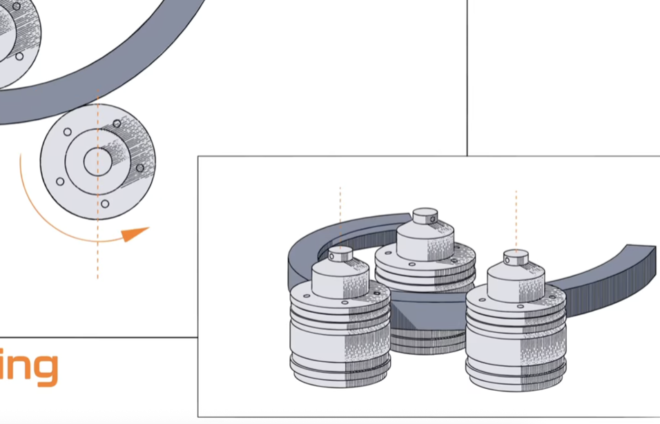

Understanding Roll Bending

Roll bending is one of the most versatile and widely used metal bending techniques in the industry. Whether you're working on architectural projects, infrastructure, or specialized industrial applications, understanding how roll bending works—and when to use it—is essential for making the right decisions about your project.
What is Roll Bending?
Roll bending uses rotating rollers to create smooth, large-radius curves in metal. Unlike mandrel bending, which creates tight-radius, precise bends, roll bending excels at producing graceful, sweeping curves across longer sections of material. The process involves passing the material through a series of rollers that progressively deform it into the desired shape.
Our equipment ranges from manual roll benders that offer hands-on control to fully CNC-controlled systems that provide precision and repeatability for high-volume production runs. This flexibility allows us to handle everything from one-off custom pieces to large production batches.
Key Advantages of Roll Bending
Versatility: Roll bending works with an impressive range of profiles—round tube, square tube, angle iron, solid bars, flat bars, channels, beams, plate, and custom extruded profiles. This makes it ideal for diverse industries and applications.
Large Radius Capability: Roll bending excels at creating large-radius curves that would be impractical with other methods. Whether you need a gentle arc or a tighter radius, the flexibility of roller adjustment makes it possible.
Material Compatibility: We can roll bend almost any workable metal—carbon steel, stainless steel, aluminum, copper, brass, nickel alloys, and more. This broad material range makes roll bending suitable for countless applications across industries.
Quality and Consistency: CNC-controlled roll benders deliver exceptional consistency, crucial for high-volume orders. Our bend tables allow us to produce multiple identical bends without setup changes, saving time and ensuring uniformity.
Common Applications
Roll bending is the go-to choice for:
- Structural Components: Curved beams, arches, and framing elements for buildings and infrastructure
- Pipeline Bends: Large-diameter pipes for water, gas, and other utilities
- Architectural/Artistic Work: Decorative railings, railings, artistic installations, and sculptural elements
- Handrails & Platforms: Safety railings, stair handrails, and industrial platforms
- Ornamental Designs: Custom curved elements for aesthetic and functional purposes
Our Process
At Compass Bending, our roll bending process is straightforward but meticulous:
1. Consultation: We discuss your project, understand your requirements, and review your specifications to determine if roll bending is the best approach.
2. Design & Planning: Our team creates a detailed plan, accounting for springback and material behavior to ensure your final bend meets exact specifications.
3. Equipment Selection: We choose the right equipment—manual or CNC—based on your profile, material, radius, and production volume. For complex shapes, we may use our bend table for consistency across multiple pieces.
4. Production & Quality Control: We execute the bend with precision, monitoring throughout the process. Our quality assurance team verifies every bend meets your specifications.
5. Finishing & Delivery: After bending, we handle any finishing requirements—finishing, coating, or surface treatments—and prepare your project for shipment.
Why Choose Compass Bending for Roll Bending?
We've been in the metal bending business for over 20 years, with decades of combined experience on our team. Our investment in both manual and CNC roll bending equipment means we can handle projects of any size or complexity. Whether you need a single custom piece or thousands of identical bends, we have the expertise and equipment to deliver.
We prioritize quality, reliability, and personal service. Our team works closely with you throughout the process, keeping you informed and addressing any concerns immediately. And yes, when you call, you'll speak with a real person—not a voicemail system.
Ready to Get Started?
If you have a project that requires roll bending, we'd love to talk about it. Contact us with your specifications, and our team will provide a detailed quote and timeline.